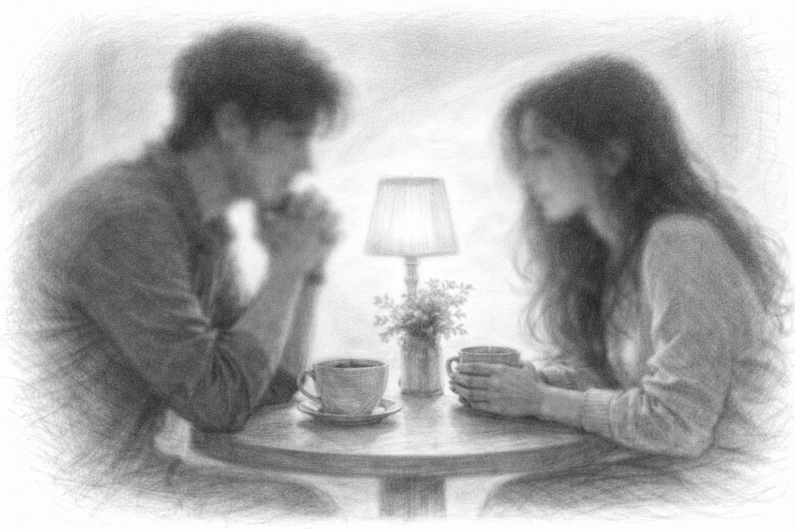

Aku bisa duduk berjam-jam hanya untuk mendengarmu mengupas isi duniamu. Mendengarkan caramu membedah sebuah masalah, caramu menarik garis lurus di antara kekacauan, hingga caramu membicarakan hal-hal yang kau sukai dengan binar mata yang lebih terang dari lampu jalanan manapun. Seringkali, saat sedang berdiskusi, aku diam bukan karena tak punya kata-kata, melainkan karena aku sedang sibuk mengabadikan caramu berpikir ke dalam ingatan permanenku. Aku terpaku melihat bagaimana caramu menghargai keheningan, dan bagaimana kau menyelipkan lelucon cerdas di tengah percakapan yang paling berat sekalipun.
Dan ketika aku mencintai isi kepalamu berarti aku harus siap menghadapi badai yang mungkin ada di sana. Karena aku tahu, di balik kecerdasan itu, pasti ada keraguan yang juga besar. Di balik logika yang kuat itu, ada duka yang kau simpan rapat-rapat. Tapi itulah yang membuatku tetap di sini. Aku tidak hanya ingin menjadi saksi kesuksesanmu, aku ingin menjadi orang yang tetap tinggal saat isi kepalamu sedang riuh dan berisik oleh rasa takut.
Ternyata, jatuh cinta pada pikiran seseorang adalah bentuk pengabdian yang paling melelahkan sekaligus paling menenangkan. Melelahkan karena aku harus terus belajar untuk mengejarmu, dan menenangkan karena aku tahu, selama aku bisa memahami caramu berpikir, aku tidak akan pernah benar-benar kehilanganmu, bahkan jika suatu hari nanti ragamu tak lagi bisa kusentuh. Sebab, ide-idemu telah menetap tinggal di kepalaku, dan cara pandangmu telah menjadi bagian dari caraku melihat dunia.